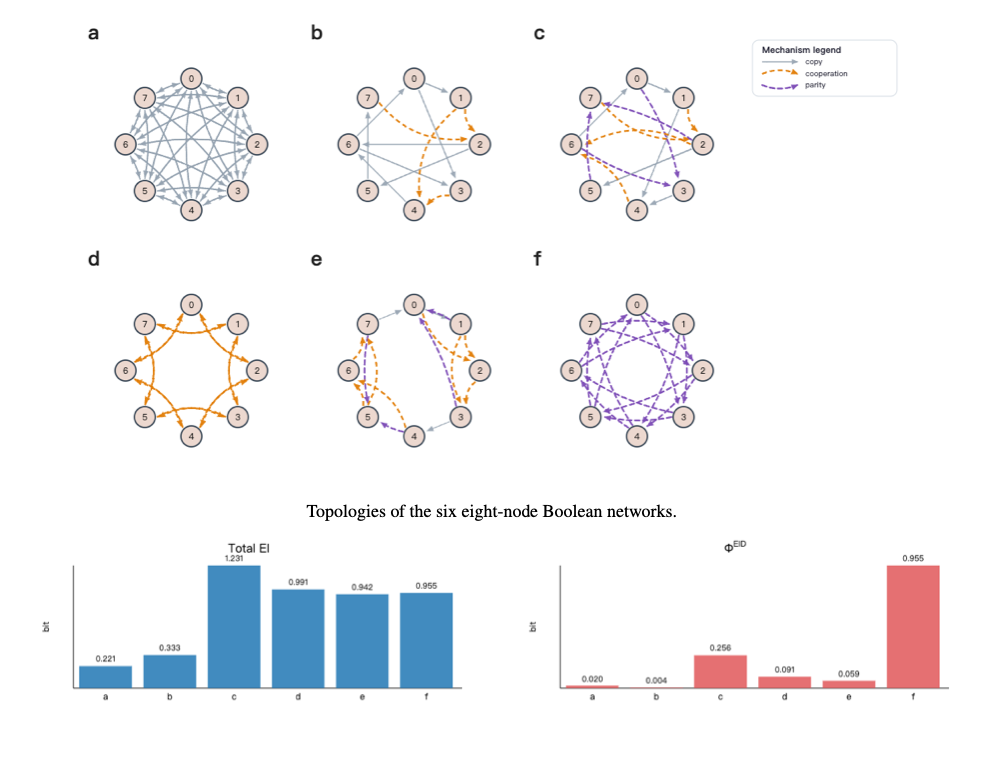
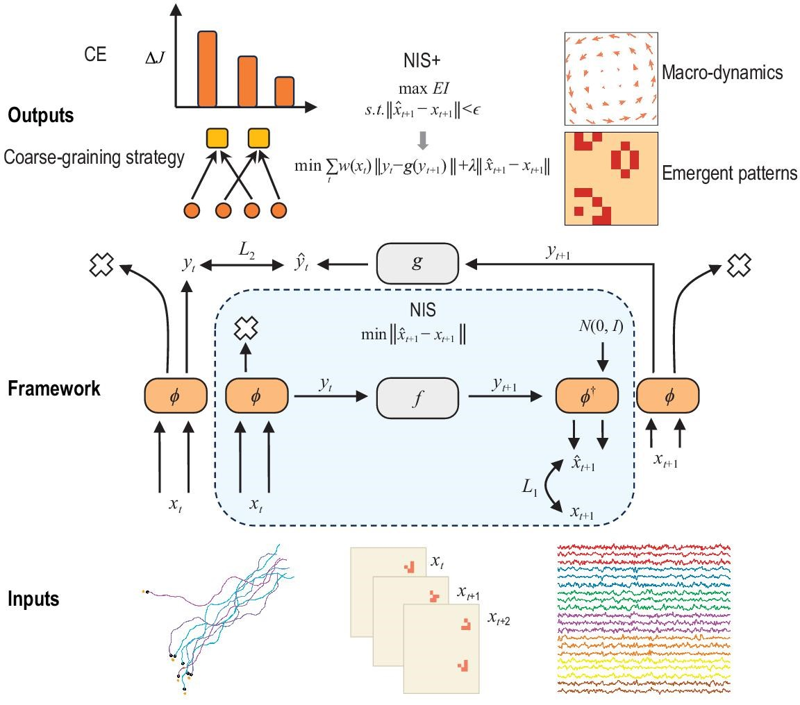
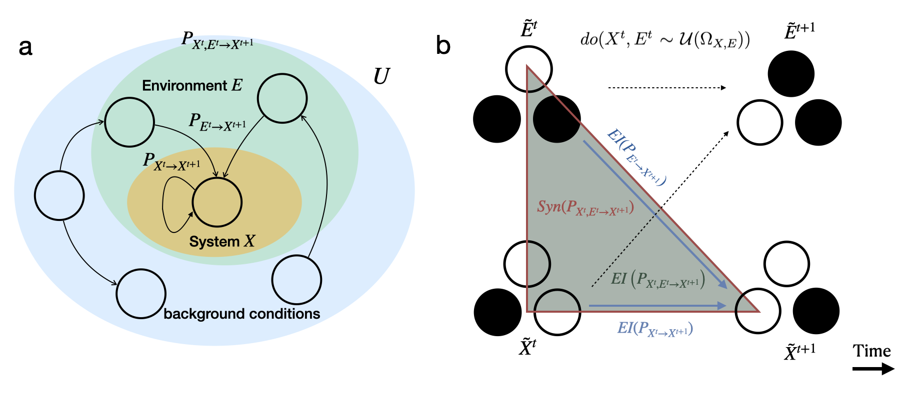
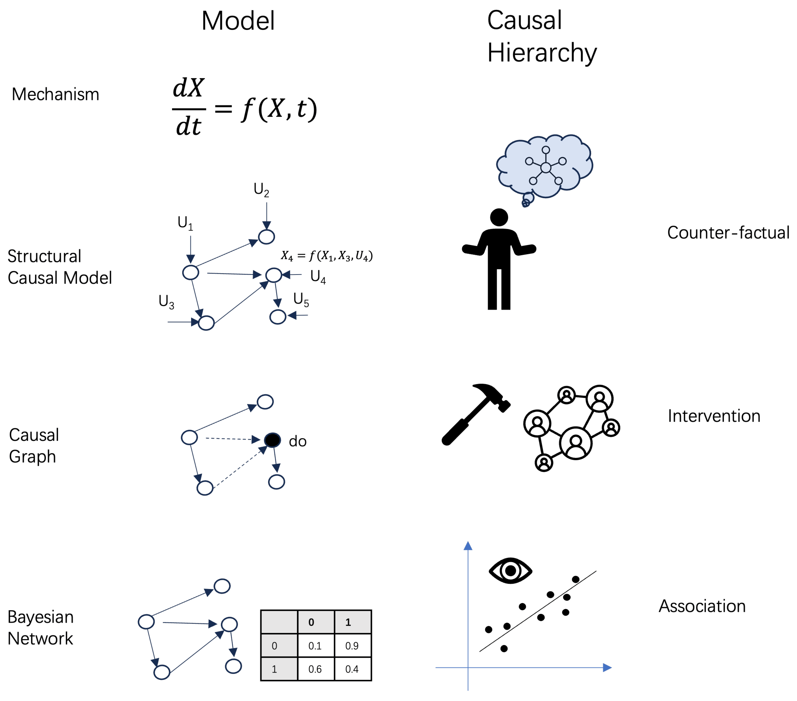
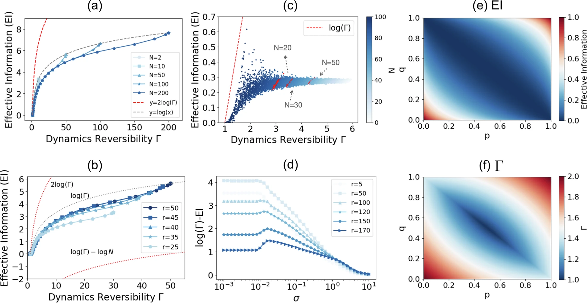
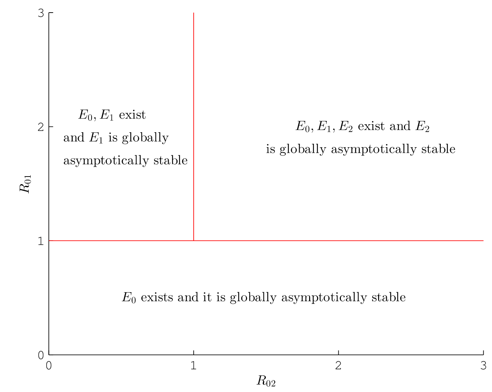
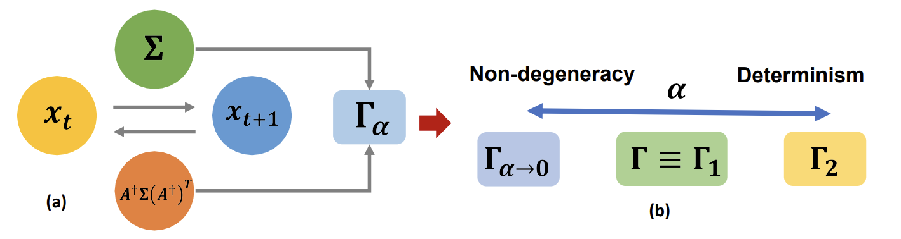
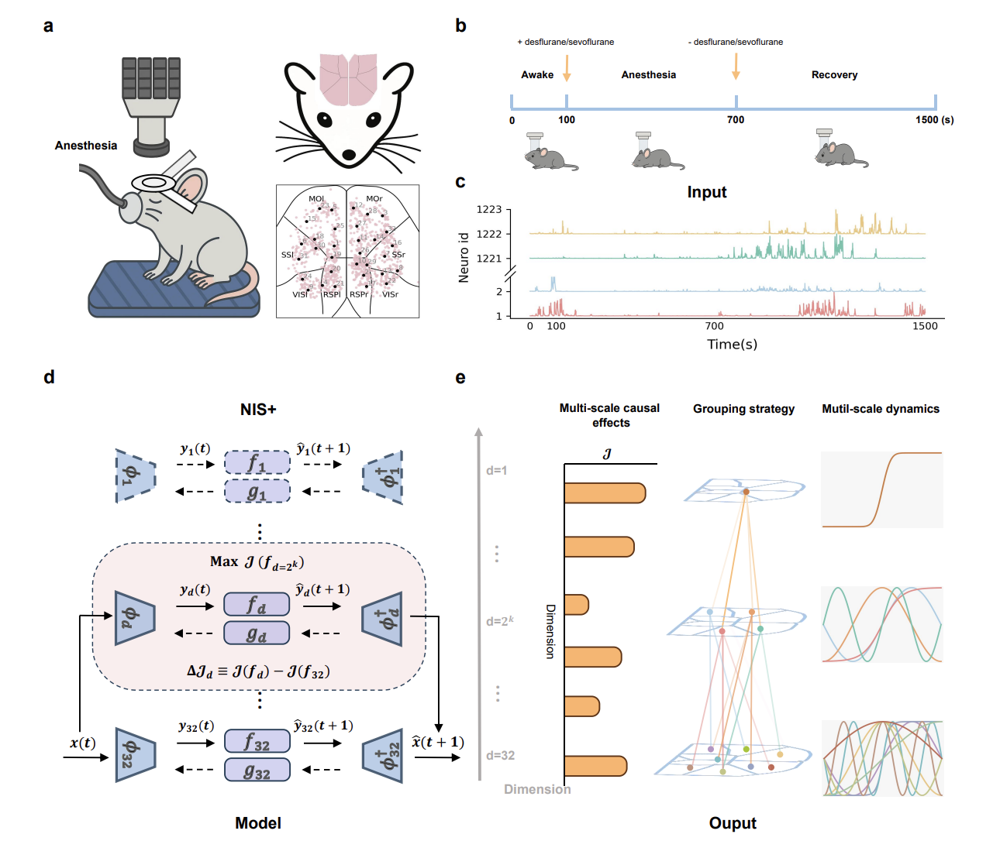
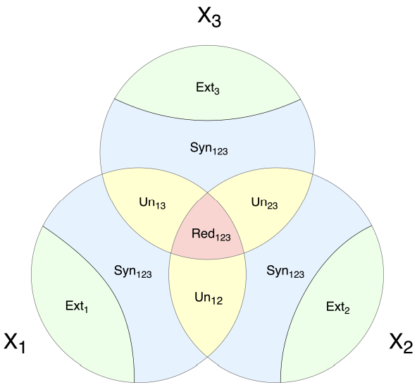

Academic Homepage
Complex systems, causal emergence, and information-theoretic approaches to scientific discovery.
北京师范大学系统科学学院 硕士
M.S. Candidate in Systems Science
School of Systems Science, Beijing Normal University
Complex System, Causal Emergence, Information Science









从还原论的局限出发，讨论复杂系统科学如何在AI时代为跨学科科学研究提供新的普适范式。
介绍跨临界分岔的历史、标准型、稳定性交换机制及其在激光模型中的典型意义。
介绍多重分形分析如何刻画大语言模型内部结构变化，为理解大模型涌现能力提供复杂系统视角。
围绕层次涌现、信息闭合与因果闭合，解读计算方法如何刻画自然系统中的层级结构。
系统梳理大语言模型涌现现象的历史、争议、结构机制与复杂系统解释框架。
介绍课题组关于量化涌现与机器观察者的研究，讨论如何用学习系统识别涌现发生。
从个人学习脉络出发，串联计算力学、因果抽象与信息分解三个复杂系统研究方向。
以范畴论语言重述因果模型，讨论机制视角下的因果关系与多尺度抽象问题。
介绍因果态、统计复杂度、香农熵率与预测机器等计算力学核心概念。
从哲学与科学史切入，梳理因果观念从四因说到现代因果科学的发展。
借助沙堆模型与自组织临界理论，解释灾难、传播和复杂系统中幂律现象的来源。
围绕整合信息论与观察者视角，讨论意识科学中的内在体验、测量与解释分歧。
作为信息动力学系列终篇，讨论复杂网络、生物系统和临界相变中的信息存储与转移。
介绍信息存储、信息转移和信息修正三类局部信息指标，解释元胞自动机中的涌现斑图。
介绍复杂系统中因果与涌现的综述工作，概览因果涌现及相关定量研究的核心问题。
从复杂适应系统角度分析ChatGPT与大语言模型，讨论规模法则、涌现与AI辅助复杂系统研究。
解读分布式计算的局部信息动力学，说明信息论为何是理解复杂系统计算与涌现的重要语言。
介绍从部分信息分解到整合信息分解的理论脉络，解释如何拆解复杂系统中的多变量信息动力学。
围绕因果与复杂系统特刊，梳理自上而下因果、闪烁涌现、机器学习与信息论相关前沿工作。
解读James Crutchfield的计算力学思想，介绍因果态、统计复杂度与层次机器重构。
解读结构因果模型中的因果一致性，讨论多尺度系统中宏观与微观描述如何相互对应。
e-mail: ymp66393866@163.com
Google Scholar: 个人主页 Profile
微信公众号： 哲思世界 ，欢迎关注我的个人公众号。
请不要在我身后，因为我不会引领；
也不要在我前面，因为我不会追随；
请在我的身边，成为我的同伴
Don't stand behind me, for I won't lead;
Don't stand before me, for I won't follow;
Stand beside me, and be my companion
{kind=link}